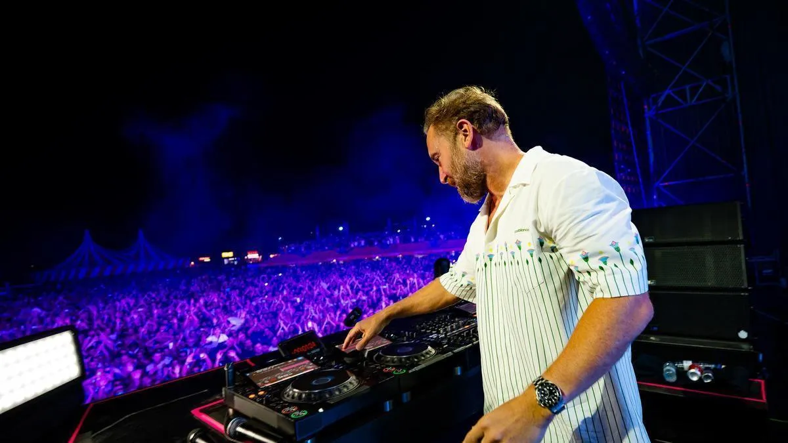

De los 80 a hoy
Trayectoria
Más de tres décadas en cabina: de los clubes de París a los escenarios más grandes del mundo.
Año por año
- Años 80
Los clubes de París
Empieza a trabajar como DJ y se acerca a la cultura de la música electrónica.
- 2002
Álbum debut
Publica Just a Little More Love.
- 2004
Guetta Blaster
Sigue desarrollando su sonido electrónico.
- 2007
Pop Life
Amplía su alcance dentro de la escena dance.
- 2009
One Love
Un álbum clave en su expansión internacional y en sus colaboraciones con artistas pop.
- 2011
Nothing but the Beat
Canciones con gran difusión internacional.
- 2014
Listen
Combina producción electrónica con colaboraciones vocales.
- 2018
7
Un proyecto que reúne distintos enfoques de su carrera.
- Hoy
Escenarios de todo el mundo
Sigue lanzando música, colaborando con otros artistas y tocando en festivales internacionales.
Estilos y proyectos
Ha ayudado a llevar la música electrónica a públicos masivos: colaboraciones con artistas pop, producciones para festivales y canciones que suenan igual en clubes, emisoras y plataformas digitales.
Su trayectoria muestra cómo un DJ puede crear canciones populares sin dejar una carrera centrada en la cultura de club y el espectáculo en vivo.
- House
- Una de las bases de su carrera como DJ y productor.
- EDM
- Producciones electrónicas pensadas para grandes escenarios y festivales.
- Dance-pop
- Ritmos electrónicos con estructuras y voces del pop.
- Future Rave
- La propuesta electrónica que desarrolló junto a MORTEN.
- Jack Back
- Su proyecto paralelo para explorar sonidos de club y house.
Curiosidades
- Su nombre completo es Pierre David Guetta.
- Nació en París, Francia.
- Empezó como DJ en clubes durante la década de 1980.
- Su álbum debut, Just a Little More Love, salió en 2002.
- Titanium, junto a Sia, es una de sus colaboraciones más conocidas.
- Ha trabajado con artistas de la electrónica, el pop, el hip-hop y otros géneros.
- Explora otros sonidos con sus proyectos Jack Back y Future Rave.
Sube el volumen
Escucha sus lanzamientos y sigue sus próximos anuncios en las plataformas oficiales.